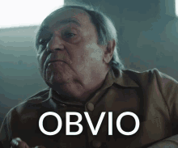
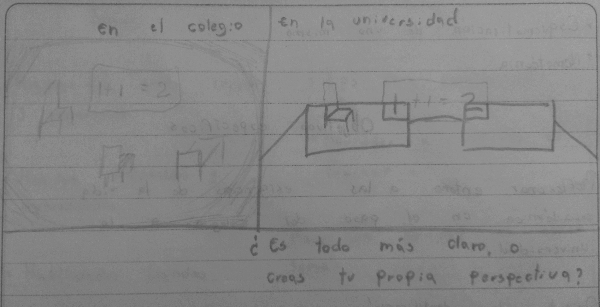

La primera clase de Aprender a aprender en el nivelatorio de EAFIT. Ha sido una experiencia totalmente increíble, hablando desde como lo viví yo. Desde ese primer día quedé completamente reflexivo, y cuestionándome muchas cosas de las que han aceptaba como algo "obvio" o que ya daba por sentado.
Un ejemplo que utilizó el profesor para demostrar, la obviedad de ciertas situaciones, y que por más que tengamos de frente la realidad. Hay veces en las que sencillamente no somos capaces de verlo, hasta que otro nos hace caer en cuenta. La imagen que se mostró en clase, puede ser descrita de muchas formas. Por ejemplo, unos dirán que es un vestido de bodas, otros que es un horno, e incluso ideas más rebuscadas cómo la de una revolución de personas pequeñas (esta fue la que más risa me dio). Pero ninguna de esas perspectivas ve lo que es en realidad la foto. La cual es sencillamente una vaca, ni más, ni menos. Y solamente una persona fue capaz de ver a aquella vaca sin que nadie le dijera nada.
(1).jpg)
A lo largo de toda la clase, se abordaron múltiples conceptos y temas que me han parecido bastante interesantes. Por ejemplo:
El poder, que es la capacidad de una persona para hacer algo, siendo así que cada uno de nosotros Podemos respirar, Podemos pensar,
Podemos hablar. Y esa es la cuestión, siempre hemos creido que el poder lo tienen unos pocos beneficiados, pero en realidad todos tenemos
poder. Solamente que no lo reconocemos como tal, y no lo podemos ver.
Aprender, este concepto que hemos escuchado tantas veces. Pero visto de otras perspectivas, cómo por ejemplo; desglosar la palabra desde la aprehensión de
conocimiento, y desde la aprehensión de la realidad. No lo mismo que siempre hemos vivido que ha sido memorizar e intentar recordar.
El nivelatorio como palabra con tintes políticos. Con respecto a esto, el profesor nos habló de una forma muy interesante, y que me ha parecido muy intrigante, esa nueva forma
de entender el nivelatorio. Y es que en realidad, si nos ponemos a analizar desde un inicio si estamos en un nivelatorio es por que estamos desnivelados. Cosa la cual no es
exclusiva de nosotros, sino de la gran mayoria de jovenes con educación pública a lo largo del país (Esta situación se ilustra de mejor manera en el libro "¿Dónde está la franja amarilla? " de William Ospina). Pero nosotros tenemos la oportunidad, tenemos el poder de salir de esa
desnivelización y ayudar a nuestro entorno, con todos los conocimientos que aprendemos cada sábado en el nivelatorio.
El paso de el colegio a la universidad. El cual es uno de los pasos más grandes que dá un joven o una persona, en su vida académica. Claramente es un cambio muy grande, y que no se debe
tomar a la ligera, ya que es eso lo que genera que muchos de los famosos "primíparos" universitarios se choquen en sus primeros semestres de universidad, sin entender el porqué de esto.
la imagen de abajo, representa cómo creo yo que será ese paso de el colegio a la universidad.

Algunas otras cosas que me llamaron la atención en esta primera clase, a pesar de que fueron temas de conversación cortos. Fueron:
- La anacrónia
- El celular como un hoyo negro de información
- El libro de la franja amarilla